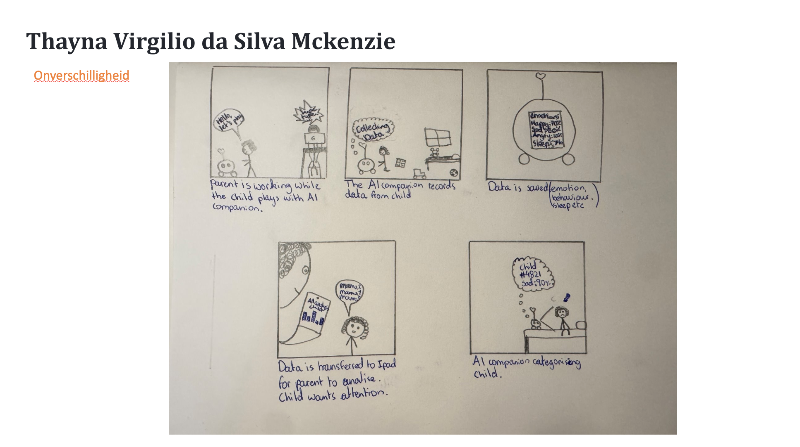
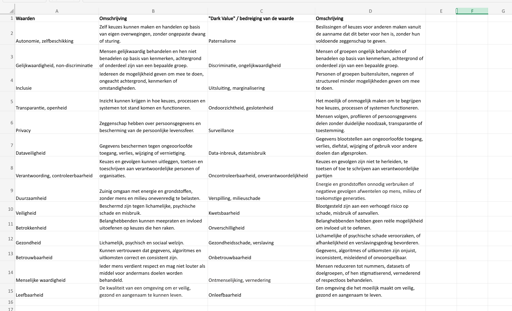
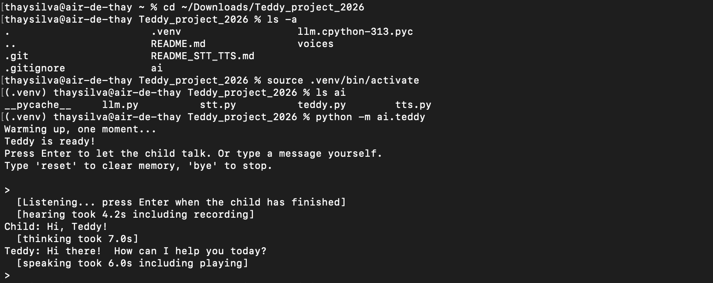
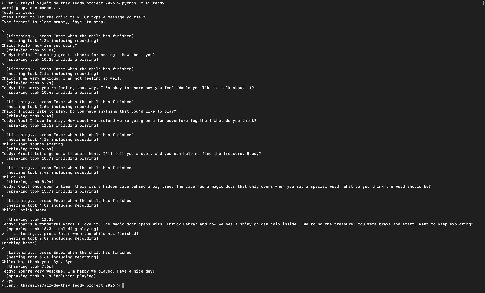
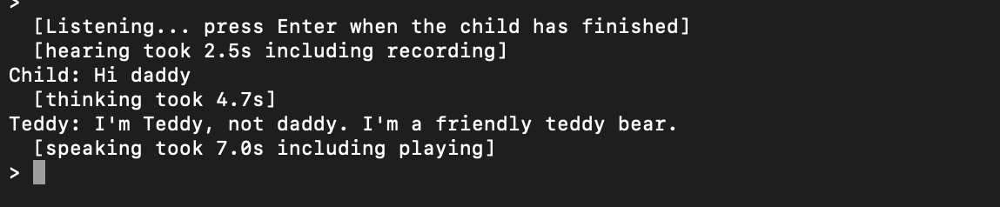
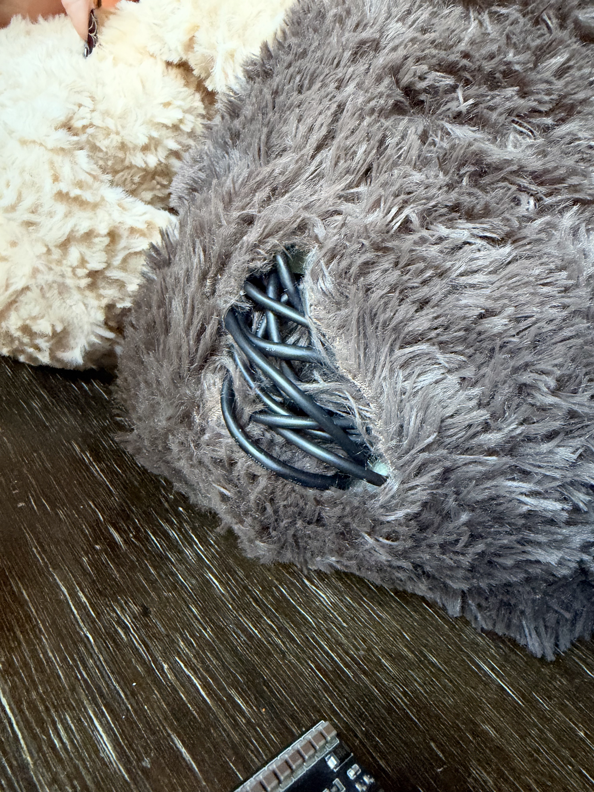
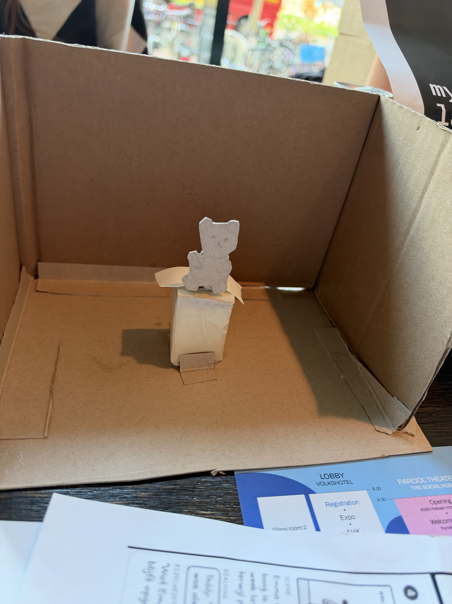
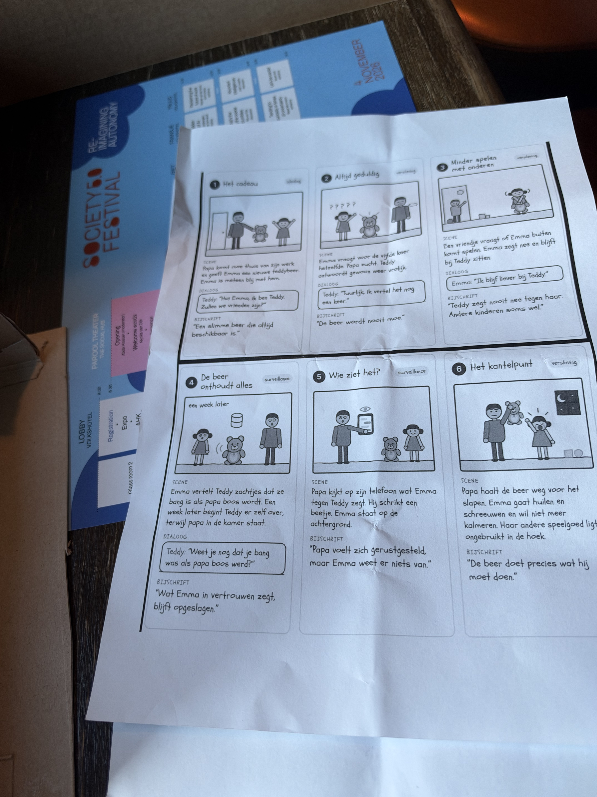

DARK TECH STUDIO · 2026
My First
Language Model™
In this DevLog, I document my design and development process, from the first concept and experiments to the technical implementation of our AI companion.
00 / THE PROJECT
What are we working on?
For Dark Tech Studio, our group is developing My First Language Model™. The idea is to create an AI companion in the form of a teddy bear, designed for children between the ages of 3 and 7.
The teddy bear is intended to listen to children and interact with them through conversations using artificial intelligence. Throughout this project, we are exploring not only how to build the technology, but also how an AI companion could influence children, parents and their relationship.
01 / SPRINT 1
Concept Development & Dark Values
Developing the concept
During the first sprint, our group started developing the concept for our AI companion. We explored how an AI companion could become part of a young child's everyday life and what role this technology could play in the relationship between children and parents.
Exploring Dark Values
An important part of this sprint was exploring the Dark Values table. As a group, we looked at different human values and their negative counterparts. We discussed how these values could relate to our AI teddy bear and what potential risks could emerge from introducing AI into the lives of young children.
Some examples from the table included:
- Privacy → Surveillance
- Human dignity → Dehumanisation
- Inclusion → Exclusion
- Autonomy → Paternalism
- Involvement → Indifference
After discussing the different values, each group member selected an individual Dark Value to explore further through their own storyboard.
My storyboard: Indifference
For my storyboard, I chose the Dark Value Indifference. I wanted to visualise a situation in which a child interacts with the AI companion while their parent is occupied with work.

In my storyboard, I show how the AI companion could collect information about the child, such as their emotions, behaviour and sleep patterns. This information is stored and transferred to an iPad, where the parent can review and analyse it. I also visualised how the AI companion categorises the child based on the information it collects.
Through this scenario, I wanted to explore how an AI companion could potentially influence the relationship between a child and their parent. For example, it raises the question of whether parents might become less directly involved in understanding their child's needs when they increasingly rely on information collected by AI.
The Dark Values table

What did I learn?
During this sprint, I learned to look more critically at a technology concept. Developing a product is not only about what it can technically do, but also about considering the possible effects it could have on the people using it.
Creating a storyboard helped me translate an abstract value into a concrete situation. It allowed me to think more clearly about the potential risks of our concept and how our design decisions could affect the relationship between children and AI.
Reflection & next steps
Looking back at this sprint, I would have liked to document more of my individual thought process while working on the concept. I would also take more pictures during the different stages of development instead of mainly documenting the final results.
This would make it easier to show how I arrived at certain design decisions and how my ideas developed throughout the process.
02 / SPRINT 2
Technical Development
In sprint 2 I started on the technical side of the project. My job was to give the teddy ears and a voice, so that a child can talk to it and hear an answer back.
My part of the system
The teddy has three AI parts: Speech-to-Text (STT), a Large Language Model (LLM) and Text-to-Speech (TTS). The LLM and its memory were already made by a teammate. I worked on the STT and the TTS, and I connected all three into one pipeline. I did not change my teammate's code.
For now we use a Wizard of Oz setup. The teddy has no moving parts. A laptop runs the AI, and a microphone and a speaker are used to talk to the teddy. A person (the "wizard") controls each turn from the laptop.
Our requirements were: English only, everything runs locally on the laptop (no cloud services), and it has to stay simple enough for a student project.
Choosing the tools
I started with faster-whisper for the STT and Piper for the TTS. Both run on the laptop, work in English and don't need internet, which is what we wanted. So I stayed with them.
| Part | What I used | Why |
|---|---|---|
| Speech-to-Text | faster-whisper, model base.en |
Runs locally and is English only. I took a small model because my laptop has no graphics card. |
| Text-to-Speech | Piper, voice en_US-amy-medium |
Runs locally. I compared three voices and Amy sounded the friendliest. |
| Recording | sounddevice |
A simple way to record the microphone in Python. |
| Playing sound | afplay |
Built into macOS. See the problems below. |
Everything is written in Python and runs on my MacBook Air.
Step 1: Setting up
First I got my teammate's code running on my own
laptop. I put it in an ai folder, made
a virtual environment (a separate space for this
project's Python packages) and installed Ollama and
the language model. Then I ran her program once on
its own, to see that it worked. That way I knew that
if something broke later, it was probably my own code.
Step 2: Speech-to-Text
The file ai/stt.py records the
microphone until I press Enter. Then it gives the
recording to faster-whisper, which turns it into text.
model = WhisperModel("base.en", device="cpu", compute_type="int8")
def transcribe(audio):
segments, _ = model.transcribe(
audio, language="en", beam_size=5, vad_filter=True
)
return " ".join(segment.text.strip() for segment in segments).strip()
int8 makes the model lighter so it runs
on a normal laptop. vad_filter=True skips
silence, because without it Whisper can make up words
when nobody is talking.
I tested it on its own by saying "Hello, Teddy. What is your name?" and it wrote down exactly that.
Step 3: Text-to-Speech and choosing a voice
The file ai/tts.py has one function,
speak(text). It runs Piper to make a
sound file from the text, and then plays that file.
subprocess.run(
[sys.executable, "-m", "piper",
"-m", str(model_path),
"-f", wav_path,
"--length-scale", str(SPEED)],
input=text, text=True, check=True,
)
subprocess.run(["afplay", wav_path], check=True)
The teddy is for children aged 3 to 7, so I listened
to three English voices saying the same sentence:
en_US-lessac-medium,
en_US-amy-medium and
en_GB-jenny_dioco-medium.
I picked Amy because she sounded the friendliest.
I also made the speech a bit slower
(SPEED = 1.1, normal is 1.0), because
I think slower speech is easier for small children
to follow.
Step 4: Connecting everything
The last file is ai/teddy.py, the main
program. It loads the three parts and repeats:
listen, think, speak.
from ai.llm import ask_teddy, reset_conversation # existing code, unchanged
from ai.stt import listen # my part
from ai.tts import speak # my part
question = typed if typed else listen()
answer = ask_teddy(question)
speak(answer)
My program only talks to the LLM through the
ask_teddy() function, so the teddy's
memory keeps working without me touching that code.
I made two choices for the Wizard of Oz setup:
- The operator presses Enter to start and stop listening. This is simple, and the teddy does not pick up background noise all the time.
- The operator can also type a sentence instead of using the microphone, in case the speech recognition mishears the child.

stt.py, tts.py and
teddy.py) in the ai folder,
and the first run of the program.

Problems I ran into
Wrong folder. At first my commands
did not work, because I was in the wrong folder in
the terminal and my ai folder ended up
in the wrong place. Now I check where I am first, and
I start the program from the project folder with
python -m ai.teddy.
The voice crackled. I first played
the sound with a Python library, but on my Mac it
made a crackling noise. I switched to
afplay, which is built into macOS, and
the crackling was gone.
The first answer was very slow. The models only load the first time you use them. I added a warm-up step that runs them once when the program starts. It helped, but in my last test the first answer still took 62.8 seconds. I am not completely sure why.
Pasting code by accident. Once I pasted code into the teddy's input, so the teddy tried to answer every line of code. I stopped it with Ctrl+C. Now I make sure I am at the normal terminal prompt before I paste commands.
It does not always understand me. The speech recognition sometimes writes down something different from what I said. Once I said "Teddy" and it understood "daddy". In my longer test it also wrote down a strange word ("Ebrick Debra") and once it heard nothing at all. This matters, because the teddy's own name is one of the words it has to understand. I have not solved this yet. A wrong word does not only look wrong on the screen, it also changes the answer the child hears (see Figure 5). It is one reason why I kept the option to type a sentence. Two things I want to try are a bigger Whisper model, and giving Whisper a hint that the word "Teddy" is likely to come up.

How fast is it?
I added timers to see where the time goes. In a conversation with seven turns I saw this:
- Thinking (the LLM): usually 6 to 11 seconds. The very first answer took 62.8 seconds.
- Speaking: 8 to 18 seconds. Longer answers take longer, because the teddy is actually talking.
- Hearing: 3 to 7 seconds, but that includes the time I spend talking and pressing Enter.
After the child stops talking, it takes roughly 9 to 14 seconds before the teddy starts to answer (the thinking time plus a couple of seconds for Piper to make the sound). That is a long time for a child, but everything runs on my own laptop. I only tested this on my own laptop with my own voice.
What the user test tells me
In Society 5.0 our group tested the Teddy concept with five people. Five is very few, so the answers are signals and not proof. The testers were probably adults or teenagers and not children, and they seemed to know Teddy from our presentation, which can influence their answers.
- Three of the five had mixed feelings about Teddy remembering things.
- Most felt only a little bit understood by Teddy.
- Teddy being disappointed when the conversation ended hardly had an effect.
- Several testers said that helping becomes manipulating when the AI starts steering you, makes you doubt yourself, or pretends to have emotions.
- The uncomfortable moments were about Teddy replacing a parent and about who can see the data, not about the conversation itself.
For my part, this makes me think that a voice that listens and answers makes Teddy feel more real, and that what Teddy remembers and who can see it matters as much as the technology. This is my own idea and not a result from the data.
The teddy at the Society festival
At the Society 5.0 festival I took photos of the teddy and of some other things at our table.



Feedback from my teachers
At Society I got feedback from two teachers. I translated it from Dutch.
Sophie:
- Look for other means for the old model, for example a baby monitor, so that it becomes more playful.
- Make sure there is more play in it for the child, for example lights.
- Maybe add an interaction. It does not necessarily have to be a screen.
Rover:
- The idea is cool and we did it well.
- Only the user interaction could be a bit better.
This links to my part of the project. Right now the child only hears a voice, and I have to press Enter on the laptop. The child gets no sign that the teddy is listening or thinking, and the thinking takes 9 to 14 seconds. Ideas I want to look at are a light that shows when the teddy is listening, thinking and speaking, and a button on the teddy instead of pressing Enter. These are only ideas for now. I have not built them and we still have to decide them as a group.
What did I learn?
- How the parts of a voice assistant fit together: audio to text, text to an answer, and the answer back to audio.
- How to work with a Python virtual environment, install packages and run programs from the terminal.
- That you can build a bigger system from small files that each do one job, and reuse a teammate's code without changing it.
- That measuring each step shows where the slowness really is.
I used an AI assistant (Claude) to help me understand and write the code step by step. I ran and tested everything myself on my laptop, and I can explain how each part works.
Reflection & next steps
In sprint 1 I wrote that I wanted to document my process better. This time I wrote down the problems I ran into and how I solved them. I still want to take more screenshots and photos while I am working, not only afterwards.
What is not done yet:
- The sound is played with
afplay, which only works on macOS. - The operator has to press Enter to start and stop recording. It would be more natural if the teddy noticed by itself when the child stops talking.
- A short sentence like "Hmm, let me think!" could cover the waiting time.
- Make the teddy better at understanding its own name, and look at the feedback about lights and a different kind of interaction.
- I still have to try it with a child's voice and with the real speaker and teddy.
- I have not tested separately whether the answers are suitable for children aged 3 to 7.